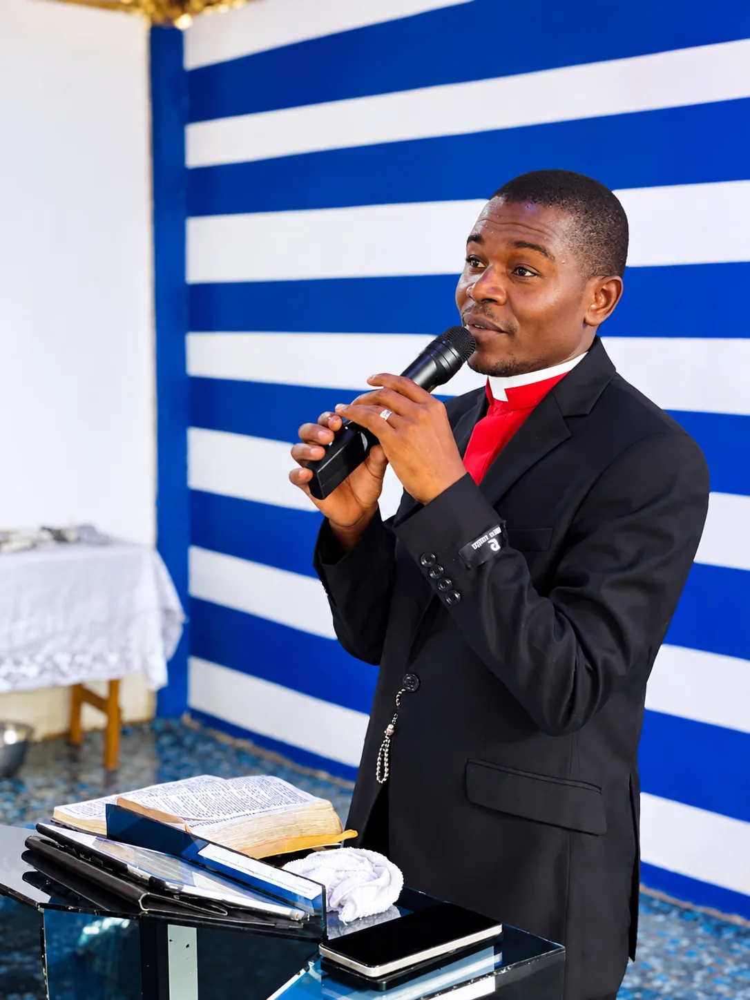
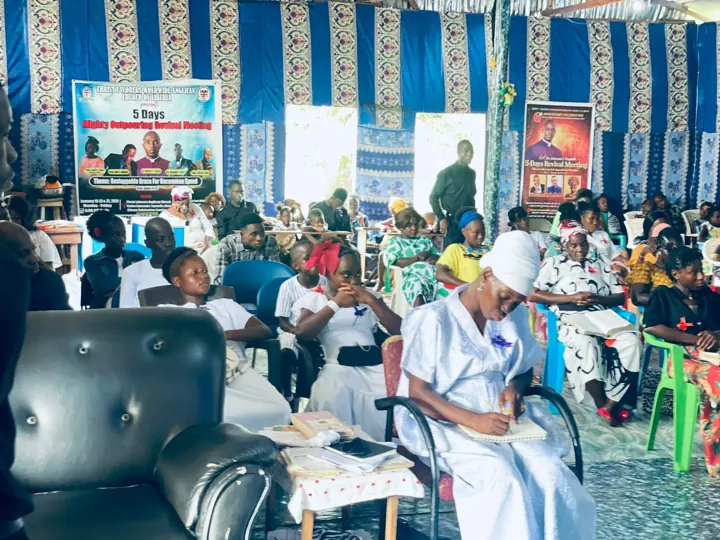
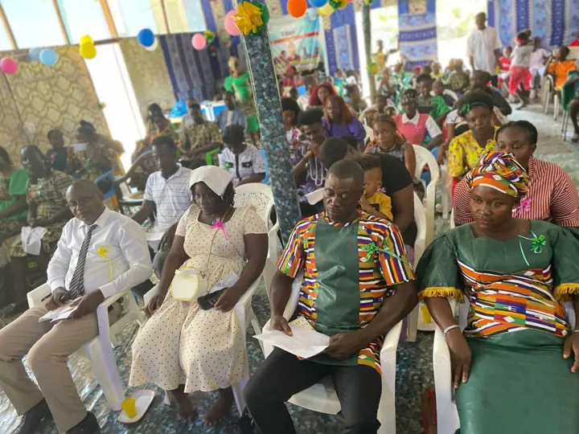
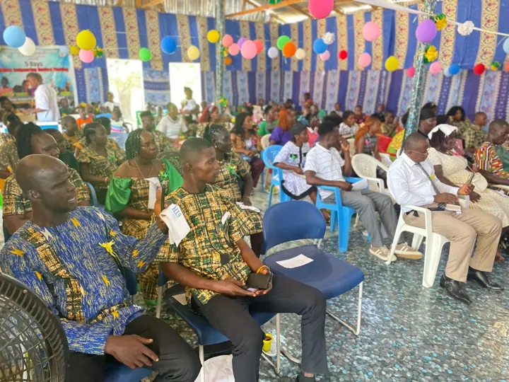
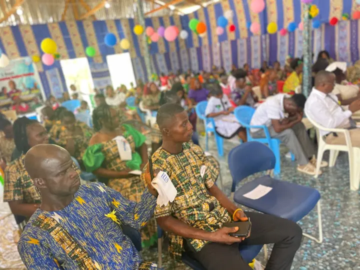

Every Monday
Equipping The Saints School
Our School of Discipleship, Leadership and Ministry. Practical, Bible-centred training for every believer who wants to go deeper.
Enroll today →Paynesville, Liberia · Est. March 10, 2020
A Christ-centered, Spirit-filled, mission-minded and service-oriented church, affiliated with the Worldwide Anglican Church.
“Follow me, and I will make you fishers of men.” Matthew 4:19
Welcome Home
Welcome to Christ Laborers Church (WAC) Liberia, a church movement committed to proclaiming Jesus Christ, making disciples, raising godly leaders, strengthening families, serving communities and advancing the Kingdom of God.
We believe the Church belongs to Jesus Christ and that every believer is called to become a laborer in God's harvest. Our emblem tells that story. Three fishermen, in red, gold and blue, pull together on one net so full it strains against the boat. It is Luke 5 all over again. When ordinary people obey Jesus and let down their nets at His word, the catch is more than they can carry alone. That is why we worship, why we disciple, and why we send.
Spirit-filled, reverent, joyful. Rooted in Anglican faith and alive with Liberian praise.
Every believer equipped through the Word, in weekly classes and mentoring.
Raising leaders and laborers to carry the Gospel into Liberia and the nations.
Our calling is simple

Shepherd & Lead Disciple-Maker
Bishop Prof. Dr. Amb. Ishmael L. Togbah founded Christ Laborers with his wife, Pastor Francess D. Togbah. He serves as Presiding Bishop, Bishop Primate for Liberia (WAC), and lead disciple-maker of the Equipping The Saints™ School of Discipleship, Leadership and Ministry.
His ministry is marked by passionate preaching, patient teaching and a deep burden to raise others up. Under his care the church has grown from a small gathering into a vibrant family. It has ordained a new generation of clergy, hosted multi-day revival meetings, and opened its doors every week to anyone hungry to learn the Scriptures.
“Discipleship builds stronger believers and healthier churches.”

A growing clergy team. Men and women called, trained and ordained to serve God's people with humility and faithfulness. Meet our leaders →
Find Your Place
From the Pastoral Board to the Prayer Warriors, 25 ministries and departments help every member find their place in the Body of Christ.
Our School of Discipleship, Leadership and Ministry. Practical, Bible-centred training for every believer who wants to go deeper.
Enroll today →
Five-day revival meetings, 50-day seasons of seeking the Lord, and nights of prayer where heaven meets earth.

Raising, training and ordaining pastors, deacons and ministers to shepherd the flock with integrity.

Joyful songs, heartfelt prayer and anointed ministry of music that lifts the name of Jesus.

Fellowships that strengthen marriages, honour our mothers and fathers, and build godly homes.

Raising young laborers who know the Word, love the church and carry the fire forward.
Every net needs many hands. Talk with us and we'll help you discover your gifts and find your place on the team.
I want to serveEquipping The Saints™ · Liberia
A School of Discipleship, Leadership and Ministry. Every Monday, open to every believer who wants to grow.
Seasons of Grace
Pastor Francess D. Togbah ministered in Congo Town, Monrovia, from Isaiah 61:7 and Zechariah 9:12.
Six years of God's faithfulness, celebrated with five days of revival under the theme “Altering Evil Agendas at the Altar” (1 Kings 18:30–40).
Students of Equipping The Saints withdrew to pray, prepare and be refreshed in God's presence.
Nightly services under the theme “Unstoppable Grace for Uncommon Speed” (Amos 9:13).
A season of consecration as the church crossed into the new year in prayer and the Word.
New ministers set apart through the laying on of hands to serve Christ and His church.
Join us as we give thanks for another year of harvest. Details to be announced.
One Family, Many Callings
Christ Laborers serves through bishops and clergy, schools and clinics, global fellowships, and honors that celebrate lives of service.
Spiritual and episcopal oversight for the Church.
University, schools, clinics and training.
The Grand Cross, the Order of Knights & Dames, and more.

Six steps to membership, and ways churches can partner.
Give & Partner
Your generosity trains disciples, supplies manuals and Bibles, supports revival meetings and strengthens the work of the Gospel across Liberia.
“The harvest truly is plenteous, but the labourers are few.” Matthew 9:37
We are praying with you. Your request goes straight to our pastoral team on WhatsApp.
Plan Your Visit
Come as you are. You'll be greeted with a smile, find warm and joyful worship, and hear a message from the Word that meets you where you are.